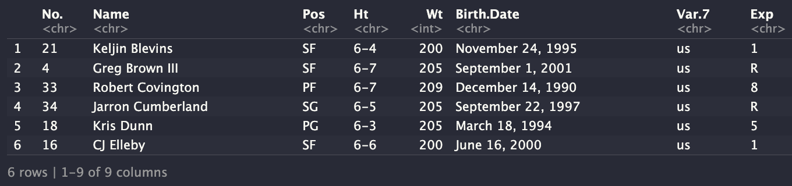

Show code
## install packages
# install.packages("rvest", "magrittr")November 7, 2022
In this tutorial I will be creating functions to scrape NBA data. The goal here is to prepare these functions to use in a package for future analysis.

0_0. IntroductionTwo essential chapters in every data scientists playbook are functions and web scrapping. In this blog post I will be making three main scrapping functions that will each include smaller nested functions. The three main functions will output specific data frames of NBA data. The nested functions will help scrape the data, and clean it so it’s in a readable form.
0_1. About-The-DataI will be scrapping data from Basketball Reference which gets thier data updated regularly by a handful of contributors and sources. The main reasons I like using this data is because it’s reliable, updated regularly, and similar sites exist for other non-NBA Sports (such as: WNBA, Baseball, Football, and others) if I wanted to expand my research outside the NBA.
0_2. Package InstallsThe packages I will be using are rvest to scrape the data and magrittr to pipe it. To install these packages, copy the code below and remove the first comment hash (command - shift - c).
Then load:
1_0. FunctionsTo start I will be creating three function:
Team Statistics
Player Statistics
Box Scores
1_1. Team Statistics:The first function I’m creating scrapes team statistics, which will need the user to input the teams url slug, the year that team attended or attends the NBA playoffs, and the stats_tb or statistics table that corresponds to what is shown on Basketball Reference. Currently not all tables work, but it should work for: #per_game, #totals, #per_36_minutes, and #advanced.
scrape_team_data <- function(slug, year, stats_tb){
"
A function that returns a data frame of team statistics.
@param slug is string of three letters that represents the teams url.
@param year is a string that corresponds to the NBA finals.
@param stats_tb is a string that corresponds to the statistics table on BasketBall Reference such as #per_game, #totals, #per_36_minutes, and #advanced
@return a df of team statistics
"
# define team page URL
url <- base::paste0("https://www.basketball-reference.com/teams/",
slug,"/", year, ".html")
# Read stats table
stats_tb <- url %>%
read_html %>%
html_node(stats_tb) %>%
html_table()
# Rename Column 2 to Name
base::names(stats_tb)[2] <- "Name"
# Replace NA values with 0 (for stat functions)
stats_tb[base::is.na(stats_tb)] <- 0
# make data frame
df <- base::data.frame(stats_tb)
base::return(df)
} No. Name Pos Ht Wt Birth.Date Var.7 Exp
1 21 Keljin Blevins SF 6-4 200 November 24, 1995 us 1
2 4 Greg Brown III SF 6-7 205 September 1, 2001 us R
3 33 Robert Covington PF 6-7 209 December 14, 1990 us 8
4 34 Jarron Cumberland SG 6-5 205 September 22, 1997 us R
5 18 Kris Dunn PG 6-3 205 March 18, 1994 us 5
6 16 CJ Elleby SF 6-6 200 June 16, 2000 us 1
College
1 Southern Miss, Montana State
2 Texas
3 Tennessee State
4 Cincinnati
5 Providence
6 Washington State Rk Name Age G GS MP FG FGA FG. X3P X3PA X3P. X2P X2PA X2P.
1 1 Michael Jordan 34 82 82 3181 881 1893 0.465 30 126 0.238 851 1767 0.482
2 2 Dennis Rodman 36 80 66 2856 155 360 0.431 4 23 0.174 151 337 0.448
3 3 Ron Harper 34 82 82 2284 293 665 0.441 16 84 0.190 277 581 0.477
4 4 Toni Kukoč 29 74 52 2235 383 841 0.455 63 174 0.362 320 667 0.480
5 5 Luc Longley 29 58 58 1703 277 609 0.455 0 0 0.000 277 609 0.455
6 6 Scottie Pippen 32 44 44 1652 315 704 0.447 61 192 0.318 254 512 0.496
eFG. FT FTA FT. ORB DRB TRB AST STL BLK TOV PF PTS
1 0.473 565 721 0.784 130 345 475 283 141 45 185 151 2357
2 0.436 61 111 0.550 421 780 1201 230 47 18 147 238 375
3 0.453 162 216 0.750 107 183 290 241 108 48 91 181 764
4 0.493 155 219 0.708 121 206 327 314 76 37 154 149 984
5 0.455 109 148 0.736 113 228 341 161 34 62 130 206 663
6 0.491 150 193 0.777 53 174 227 254 79 43 109 116 841Here we can see when Michael Jordan won his 6th ring with the Chicago Bulls he was also the leagues leading point scorer with 2,357 total points that season. Dennis Rodman was also a league leader that season in rebounds collecting a total of 1,201 rebounds.
1_2. Player StatisticsThe second function will scrape player statistics. The user will need to input the players name, and the stats_tb or statistics table that corresponds to what is shown on Basketball Reference. Currently not all tables work, but it should work for: #per_game, #totals, #per_36_minutes, and #advanced.
scrape_player_data <- function(name, stats_tb){
"
A function that returns a data frame of player statistics.
@param name is a string that represnets an NBA players name
@param stats_tb is a string that corresponds to the statistics table on BasketBall Reference such as #per_game, #totals, #per_36_minutes, and #advanced
@return a df of player statistics
"
# make name lower case
lower_case_name <- base::tolower(name)
# split name
split_name <- base::strsplit(lower_case_name, " +")[[1]]
# define first and last name
first_name <- split_name[[1]]
last_name <- split_name[[2]]
# first letter of last name
letter <- base::substr(last_name, 1,1)
# first five letters of last name
last_5 <- base::substr(last_name, 1, 5)
# first two letters of first name
first_2 <- base::substr(first_name, 1,2)
# define team page URL
url <- base::paste0("https://www.basketball-reference.com/players/",letter ,"/",last_5,first_2,"01.html")
# Read stats table
stats_tb <- url %>%
read_html %>%
html_node(stats_tb) %>%
html_table()
# Rename Column 2 to Name
names(stats_tb)[2] <- "Name"
# Replace NA values with 0 (for stat functions)
stats_tb[base::is.na(stats_tb)] <- 0
# make list a dataframe
df <- base::data.frame(stats_tb)
base::return(df)
} Season Name Tm Lg Pos G GS MP FG FGA FG. X3P X3PA X3P. X2P X2PA
1 1996-97 21 PHI NBA PG 76 74 40.1 8.2 19.8 .416 2.0 6.0 .341 6.2 13.8
2 1997-98 22 PHI NBA PG 80 80 39.4 8.1 17.6 .461 0.9 2.9 .298 7.2 14.7
3 1998-99 23 PHI NBA SG 48 48 41.5 9.1 22.0 .412 1.2 4.1 .291 7.9 17.9
4 1999-00 24 PHI NBA SG 70 70 40.8 10.4 24.8 .421 1.3 3.7 .341 9.1 21.0
5 2000-01 25 PHI NBA SG 71 71 42.0 10.7 25.5 .420 1.4 4.3 .320 9.4 21.2
6 2001-02 26 PHI NBA SG 60 59 43.7 11.1 27.8 .398 1.3 4.5 .291 9.8 23.4
X2P. eFG. FT FTA FT. ORB DRB TRB AST STL BLK TOV PF PTS
1 .448 .467 5.0 7.2 .702 1.5 2.6 4.1 7.5 2.1 0.3 4.4 3.1 23.5
2 .494 .486 4.9 6.7 .729 1.1 2.6 3.7 6.2 2.2 0.3 3.1 2.5 22.0
3 .440 .439 7.4 9.9 .751 1.4 3.5 4.9 4.6 2.3 0.1 3.5 2.0 26.8
4 .435 .446 6.3 8.9 .713 1.0 2.8 3.8 4.7 2.1 0.1 3.3 2.3 28.4
5 .441 .447 8.2 10.1 .814 0.7 3.1 3.8 4.6 2.5 0.3 3.3 2.1 31.1
6 .419 .422 7.9 9.8 .812 0.7 3.8 4.5 5.5 2.8 0.2 4.0 1.7 31.4
Awards
1 MVP-17,ROY-1
2
3 MVP-4,NBA1
4 MVP-7,NBA2,AS
5 MVP-1,NBA1,AS,DPOY-11
6 MVP-9,NBA2,ASNotice that when Allen Iverson won the NBA’s MVP in 2001 he was putting up about 31 points a game.
Season Name Tm Lg Pos G GS MP FG FGA FG. X3P X3PA X3P. X2P X2PA
1 1969-70 22 MIL NBA C 82 0 3534 938 1810 0.518 0 0 0 938 1810
2 1970-71 23 MIL NBA C 82 0 3288 1063 1843 0.577 0 0 0 1063 1843
3 1971-72 24 MIL NBA C 81 0 3583 1159 2019 0.574 0 0 0 1159 2019
4 1972-73 25 MIL NBA C 76 0 3254 982 1772 0.554 0 0 0 982 1772
5 1973-74 26 MIL NBA C 81 0 3548 948 1759 0.539 0 0 0 948 1759
6 1974-75 27 MIL NBA C 65 0 2747 812 1584 0.513 0 0 0 812 1584
X2P. eFG. FT FTA FT. ORB DRB TRB AST STL BLK TOV PF PTS Var.31
1 0.518 0.518 485 743 0.653 0 0 1190 337 0 0 0 283 2361 0
2 0.577 0.577 470 681 0.690 0 0 1311 272 0 0 0 264 2596 0
3 0.574 0.574 504 732 0.689 0 0 1346 370 0 0 0 235 2822 0
4 0.554 0.554 328 460 0.713 0 0 1224 379 0 0 0 208 2292 0
5 0.539 0.539 295 420 0.702 287 891 1178 386 112 283 0 238 2191 0
6 0.513 0.513 325 426 0.763 194 718 912 264 65 212 0 205 1949 0
Trp.Dbl
1 0
2 1
3 1
4 2
5 3
6 11_3. Box ScoresThe last function still needs a bit of work, but will pull box scores of all the NBA games on a given day. The user will need to enter the game_day or day of the games they want box scores for.
Note: Ideally this function would return a list with each game being its own df, but for now it only prints one data frame that includes all games played on that date. There also seem to be issues when only one game is played, or it is the first game of the season (see examples below), but for now those issues are manageable.
box_scores <- function(game_day){
"
A function that returns a data frame of box scores.
@param game_day is a string that represents the date in the form Y-M-D
@return a df of box scores from that day.
"
# split by dash
split_date <- base::strsplit(game_day, "-")
# year - month - day
year <- split_date[[1]][[1]]
month <- split_date[[1]][[2]]
day <- split_date[[1]][[3]]
#url
url <- base::paste0("https://www.basketball-reference.com/boxscores/?month=",
month ,"&day=", day,"&year=", year)
# read url
html <- read_html(url)
# extract all the 'div" items from the html as tables
div <- html %>%
html_elements("div") %>%
html_table()
#remove empties
div <- div[base::sapply(div, function(i) dim(i)[1]) > 0]
# only keep rows == 7
div <- div[base::sapply(div, function(i) nrow(i)[1]) == 7]
# empty list
my_vec <- base::list()
#for loop
for(i in 1:base::length(div)) {
my_out <- div[[i]][3:5,]
my_vec <- c(my_vec, my_out)
df <- base::data.frame(my_vec)
}
df <- df[-1,]
base::return(df)
} X1 X2 X3 X4 X5 X1.1 X2.1 X3.1 X4.1 X5.1 X1.2 X2.2 X3.2 X4.2
2 Houston 20 30 30 27 New Orleans 32 26 40 32 Orlando 28 27 28
3 Atlanta 26 33 25 33 Brooklyn 14 36 28 30 Detroit 17 40 34
X5.2 X1.3 X2.3 X3.3 X4.3 X5.3 X1.4 X2.4 X3.4 X4.4 X5.4 X6 X1.5
2 26 Washington 36 24 27 27 New York 23 23 33 29 4 Chicago
3 22 Indiana 25 27 25 30 Memphis 25 36 24 23 7 Miami
X2.5 X3.5 X4.5 X5.5 X1.6 X2.6 X3.6 X4.6 X5.6 X1.7 X2.7 X3.7 X4.7
2 28 31 37 20 Oklahoma City 22 30 35 21 Dallas 32 30 19
3 33 26 27 22 Minnesota 35 30 22 28 Phoenix 24 21 31
X5.7 X1.8 X2.8 X3.8 X4.8 X5.8 X1.9 X2.9 X3.9 X4.9 X5.9 X1.10
2 24 Portland 32 19 33 31 Charlotte 38 30 30 31 Cleveland
3 31 Sacramento 23 32 29 24 San Antonio 22 25 28 27 Toronto
X2.10 X3.10 X4.10 X5.10 X1.11 X2.11 X3.11 X4.11 X5.11
2 22 35 27 21 Denver 30 23 27 22
3 28 23 25 32 Utah 37 38 19 29 X1 X2 X3 X4 X5 X1.1 X2.1 X3.1 X4.1 X5.1 X1.2
2 Philadelphia 29 34 25 29 LA Lakers 22 30 19 38 Philadelphia 76ers*
3 Boston 24 39 35 28 Golden State 25 34 32 32 Western Conference
X2.2 X3.2 X4.2 X5.2 X6 X7 X8 X9 X10 X11 X12 X13 X14 X15 X16 X17
2 0 1 .000 1.0 117.0 126.0 <NA> <NA> NA NA NA <NA> NA NA <NA> NA
3 W L W/L% GB PS/G PA/G <NA> <NA> NA NA NA <NA> NA NA <NA> NA
X18 X19 X20 X21 X22 X23 X24 X25 X26 X27 X28 X29 X30 X31 X32 X33 X34
2 NA NA NA NA NA <NA> <NA> <NA> <NA> <NA> <NA> <NA> <NA> <NA> NA NA NA
3 NA NA NA NA NA <NA> <NA> <NA> <NA> <NA> <NA> <NA> <NA> <NA> NA NA NA
X35 X36 X37 X38 X39 X40 X41 X42 X43 X44
2 <NA> NA NA <NA> NA NA NA NA NA NA
3 <NA> NA NA <NA> NA NA NA NA NA NAIssue: For the first game of the season there is an are NA tables that are being pulled in.
G. First game of the 1992 NBA Finals AKA Michael Jordan’s famous Shrug (issues)
X1 X2 X3 X4 X5 X1.1 X2.1 X3.1 X4.1 X5.1
2 Portland 30 21 17 21 Portland 30 21 17 21
3 Chicago 33 33 38 18 Chicago 33 33 38 18Issue: For days where only one game is played the one game is printed twice in the data frame.
---
title: "SportsObserveR - Part 1: Scrapping Functions"
date: "2022-11-07"
categories: [Original, R, NBA, Web-Scrapping]
toc: true
draft: false
format:
html:
code-fold: true
code-summary: "Show code"
code-tools: true
---
In this tutorial I will be creating functions to scrape NBA data. The goal here is to prepare these functions to use in a package for future analysis.

# `0_0. Introduction`
Two essential chapters in every data scientists playbook are functions and web scrapping. In this blog post I will be making three main scrapping functions that will each include smaller nested functions. The three main functions will output specific data frames of NBA data. The nested functions will help scrape the data, and clean it so it's in a readable form.
## `0_1. About-The-Data`
I will be scrapping data from [Basketball Reference](https://www.basketball-reference.com/) which gets thier data updated regularly by a handful of [contributors and sources](https://www.basketball-reference.com/about/sources.html). The main reasons I like using this data is because it's reliable, updated regularly, and similar sites exist for other non-NBA Sports (such as: [WNBA](https://www.basketball-reference.com/wnba/), [Baseball](https://www.baseball-reference.com/), [Football](https://www.pro-football-reference.com/), and others) if I wanted to expand my research outside the NBA.
## `0_2. Package Installs`
The packages I will be using are [rvest](https://rvest.tidyverse.org/) to scrape the data and [magrittr](https://magrittr.tidyverse.org/) to pipe it. To install these packages, copy the code below and remove the first comment hash (command - shift - c).
```{r}
## install packages
# install.packages("rvest", "magrittr")
```
Then load:
```{r, message=FALSE, warning=FALSE}
# load packages
library(rvest)
library(magrittr)
```
# `1_0. Functions`
To start I will be creating three function:
1. Team Statistics
2. Player Statistics
3. Box Scores
## `1_1. Team Statistics`:
The first function I'm creating scrapes team statistics, which will need the user to input the teams url **slug**, the **year** that team attended or attends the NBA playoffs, and the **stats_tb** or statistics table that corresponds to what is shown on [Basketball Reference](https://www.basketball-reference.com/). Currently not all tables work, but it should work for: #per_game, #totals, #per_36_minutes, and #advanced.
```{r}
scrape_team_data <- function(slug, year, stats_tb){
"
A function that returns a data frame of team statistics.
@param slug is string of three letters that represents the teams url.
@param year is a string that corresponds to the NBA finals.
@param stats_tb is a string that corresponds to the statistics table on BasketBall Reference such as #per_game, #totals, #per_36_minutes, and #advanced
@return a df of team statistics
"
# define team page URL
url <- base::paste0("https://www.basketball-reference.com/teams/",
slug,"/", year, ".html")
# Read stats table
stats_tb <- url %>%
read_html %>%
html_node(stats_tb) %>%
html_table()
# Rename Column 2 to Name
base::names(stats_tb)[2] <- "Name"
# Replace NA values with 0 (for stat functions)
stats_tb[base::is.na(stats_tb)] <- 0
# make data frame
df <- base::data.frame(stats_tb)
base::return(df)
}
```
### Examples
#### A. Current Blazers Roster
```{r}
zers_roster <- scrape_team_data("POR","2022","#roster")
utils::head(zers_roster)
```
#### B. 1997 Chicago Bulls Total Statistics
```{r}
bulls_totals <- scrape_team_data("CHI", "1998", "#totals")
utils::head(bulls_totals)
```
*Here we can see when Michael Jordan won his 6th ring with the Chicago Bulls he was also the leagues leading point scorer with 2,357 total points that season. Dennis Rodman was also a league leader that season in rebounds collecting a total of 1,201 rebounds.*
## `1_2. Player Statistics`
The second function will scrape player statistics. The user will need to input the players **name**, and the **stats_tb** or statistics table that corresponds to what is shown on [Basketball Reference](https://www.basketball-reference.com/). Currently not all tables work, but it should work for: #per_game, #totals, #per_36_minutes, and #advanced.
```{r}
scrape_player_data <- function(name, stats_tb){
"
A function that returns a data frame of player statistics.
@param name is a string that represnets an NBA players name
@param stats_tb is a string that corresponds to the statistics table on BasketBall Reference such as #per_game, #totals, #per_36_minutes, and #advanced
@return a df of player statistics
"
# make name lower case
lower_case_name <- base::tolower(name)
# split name
split_name <- base::strsplit(lower_case_name, " +")[[1]]
# define first and last name
first_name <- split_name[[1]]
last_name <- split_name[[2]]
# first letter of last name
letter <- base::substr(last_name, 1,1)
# first five letters of last name
last_5 <- base::substr(last_name, 1, 5)
# first two letters of first name
first_2 <- base::substr(first_name, 1,2)
# define team page URL
url <- base::paste0("https://www.basketball-reference.com/players/",letter ,"/",last_5,first_2,"01.html")
# Read stats table
stats_tb <- url %>%
read_html %>%
html_node(stats_tb) %>%
html_table()
# Rename Column 2 to Name
names(stats_tb)[2] <- "Name"
# Replace NA values with 0 (for stat functions)
stats_tb[base::is.na(stats_tb)] <- 0
# make list a dataframe
df <- base::data.frame(stats_tb)
base::return(df)
}
```
### Examples
#### C. [Allen Iverson](https://en.wikipedia.org/wiki/Allen_Iverson) Per Game Stats
```{r}
ai_per_game <- scrape_player_data("Allen Iverson", "#per_game")
head(ai_per_game)
```
*Notice that when Allen Iverson won the NBA's MVP in 2001 he was putting up about 31 points a game.*
#### D. [Kareem Abdul-Jabbar](https://en.wikipedia.org/wiki/Kareem_Abdul-Jabbar) Totals
```{r}
kaj_totals <- scrape_player_data("Kareem Abdul-Jabbar", "#totals")
utils::head(kaj_totals)
```
## `1_3. Box Scores`
The last function still needs a bit of work, but will pull box scores of all the NBA games on a given day. The user will need to enter the **game_day** or day of the games they want box scores for.
Note: Ideally this function would return a list with each game being its own df, but for now it only prints one data frame that includes all games played on that date. There also seem to be issues when only one game is played, or it is the first game of the season (see examples below), but for now those issues are manageable.
```{r}
box_scores <- function(game_day){
"
A function that returns a data frame of box scores.
@param game_day is a string that represents the date in the form Y-M-D
@return a df of box scores from that day.
"
# split by dash
split_date <- base::strsplit(game_day, "-")
# year - month - day
year <- split_date[[1]][[1]]
month <- split_date[[1]][[2]]
day <- split_date[[1]][[3]]
#url
url <- base::paste0("https://www.basketball-reference.com/boxscores/?month=",
month ,"&day=", day,"&year=", year)
# read url
html <- read_html(url)
# extract all the 'div" items from the html as tables
div <- html %>%
html_elements("div") %>%
html_table()
#remove empties
div <- div[base::sapply(div, function(i) dim(i)[1]) > 0]
# only keep rows == 7
div <- div[base::sapply(div, function(i) nrow(i)[1]) == 7]
# empty list
my_vec <- base::list()
#for loop
for(i in 1:base::length(div)) {
my_out <- div[[i]][3:5,]
my_vec <- c(my_vec, my_out)
df <- base::data.frame(my_vec)
}
df <- df[-1,]
base::return(df)
}
```
### Example
#### E. Box Scores for 10-19-2022 (works correctly)
```{r}
oct_19 <- box_scores("2022-10-19")
oct_19
```
#### F. Box scores for the first day of the '22/'23 NBA season (issues)
```{r}
oct_18 <- box_scores("2022-10-18")
oct_18
```
[Issue: For the first game of the season there is an are NA tables that are being pulled in.]{style="color: red;"}
G. First game of the 1992 NBA Finals AKA [Michael Jordan's famous Shrug](https://www.youtube.com/watch?v=hynjpv8y1pA&t=16s) (issues)
```{r}
finals_92_g1 <- box_scores("1992-6-3")
finals_92_g1
```
[Issue: For days where only one game is played the one game is printed twice in the data frame.]{style="color: red;"}